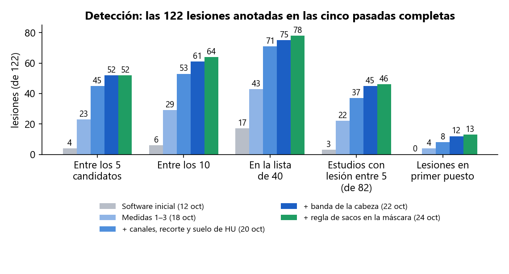
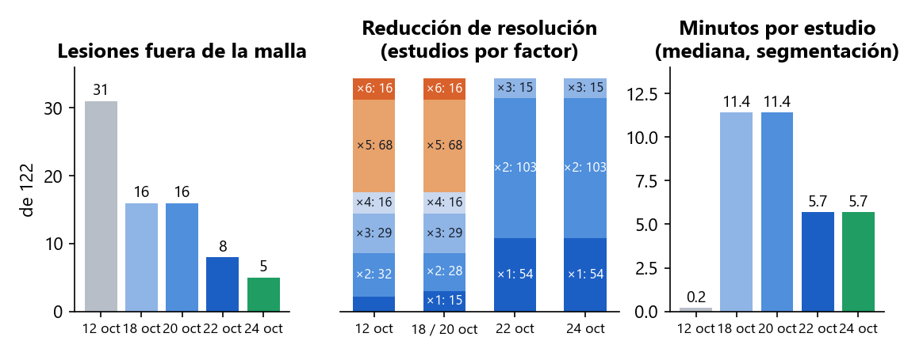
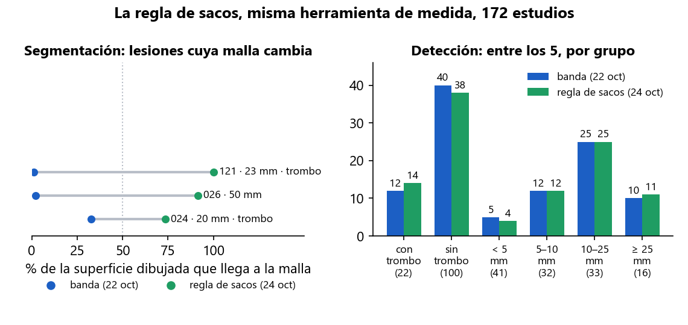
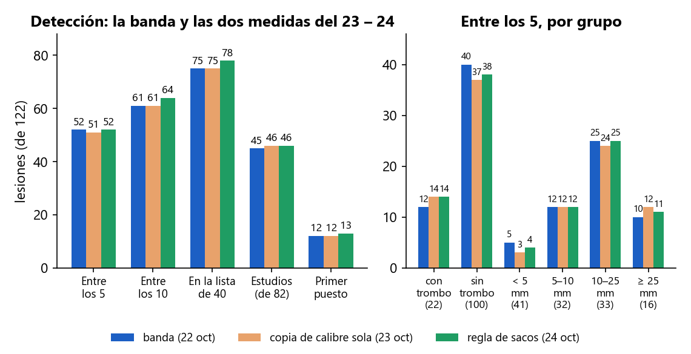
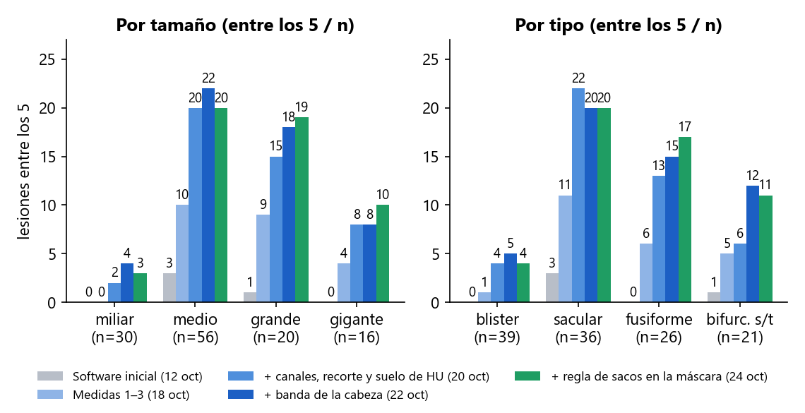
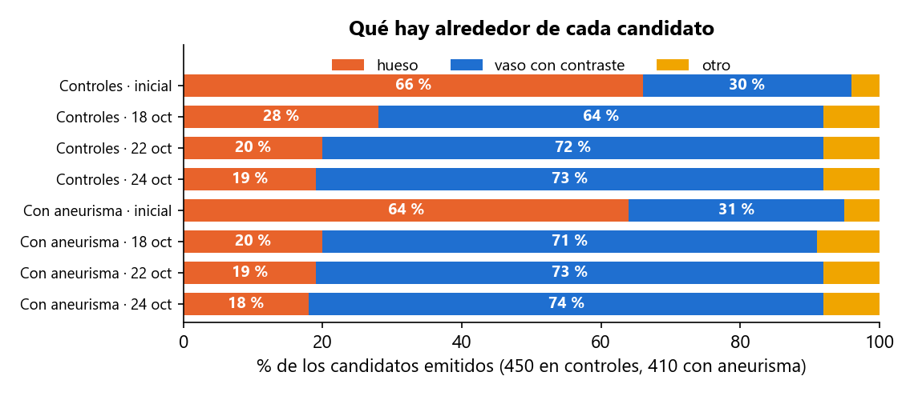
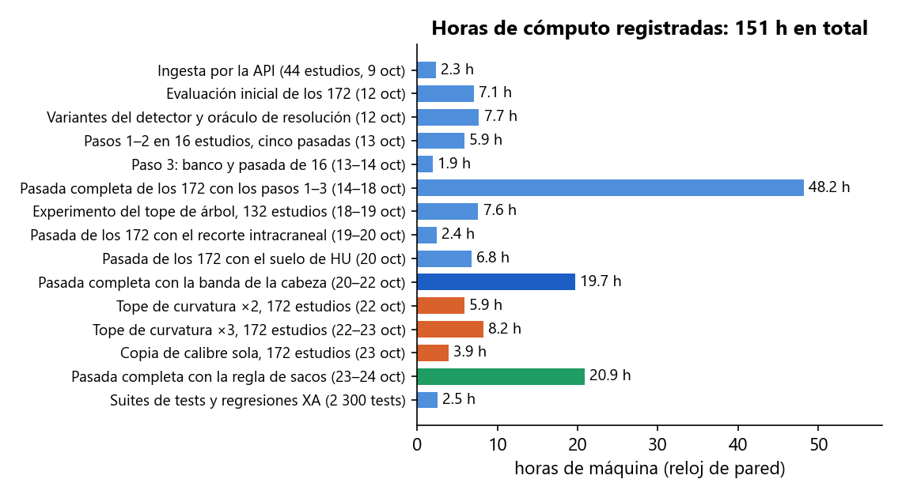

En dos semanas y media se ha incorporado el primer dataset público con verdad de terreno (172 angio-TC de cabeza con 122 aneurismas segmentados a mano), se ha medido el detector de Prospective sobre él ocho veces de principio a fin y, entre pasada y pasada, se han identificado y corregido las causas del fallo una a una, separando siempre lo que falla en la segmentación (la lesión no llega al modelo 3D) de lo que falla en la detección (está en el modelo y el detector no la coloca). Las lesiones que la aplicación pone entre sus 5 candidatos pasan de 4 a 52; las que no llegan al modelo, de 31 a 5. Lo nuevo desde el día 23 son tres medidas más, las tres juzgadas sobre los 172 estudios: dos de detección que se descartan con cifras (subir el detalle de la curvatura y aislar la pieza del calibre) y una de segmentación que entra: una regla que recupera en el modelo los sacos grandes que se quedaban fuera por su cuello estrecho o su trombo. Con ella, el gigante de 50 mm que nunca había llegado al modelo sale en primer puesto, y el de 23 mm con trombo, en segundo.
| Fecha | Trabajo | Resultado | Estado |
|---|---|---|---|
| 8 oct | Auditoría de seguridad de la API y el acceso; búsqueda de datasets DICOM con verdad de terreno | 7 hallazgos corregidos el mismo día. Elegido Zenodo 15697196 (CC-BY): el único con DICOM + segmentación manual del aneurisma | hecho |
| 9 oct | Ingesta de 44 estudios por la API, como un usuario, y banco de medida del detector | Primer dato real: 2 aciertos de 34 aneurismas en angio-TC | hecho |
| 12 oct | Evaluación de los 172 estudios con el software tal cual, ajustes del detector y un oráculo de resolución | 4 de 122 lesiones entre los 5; 31 fuera del modelo; tres causas medidas | hecho |
| 13 – 14 oct | Medidas 0 – 3: red de seguridad 3DRA, resolución nativa donde importa, hueso fuera de la máscara en TC, detector sobre la malla limpia | Diseñadas y medidas sobre 16 estudios; 3DRA sin cambios | hecho |
| 14 – 18 oct | Primera pasada completa de los 172 con las medidas 1 – 3 (48 h de máquina) | 23 de 122 entre los 5; 16 fuera del modelo; dos poblaciones de estudios identificadas | hecho |
| 18 – 19 oct | Canales de grosor en los 132 estudios de cabeza y cuello (7,6 h); criterio absoluto en controles | Entre los 5 de 5 a 13 en esos estudios; regla cambiada. El criterio absoluto se midió y no existe | hecho |
| 19 – 20 oct | Recorte a la región intracraneal antes de detectar; suelo de densidad; dos pasadas de detección de los 172 sobre las mallas guardadas | 44 y después 45 de 122 entre los 5, 8 en primer puesto, ninguna lesión baja | hecho |
| 20 – 22 oct | Banda de la cabeza antes de segmentar; cuarta pasada completa de los 172 desde el DICOM (19,7 h); fusión con los 321 cambios del compañero y publicación en master | 52 de 122 entre los 5, 12 en primer puesto, 45 de 82 estudios, 8 fuera del modelo, 5,7 min por estudio | hecho |
| 22 – 23 oct | Experimento del tope de curvatura: detección de los 172 sobre las mallas guardadas con el tope al doble y al triple (14 h) | 44 y 46 de 122 entre los 5, frente a 52. Recupera 3 sacos grandes y pierde de 5 a 7 de menos de 10 mm. No se adopta | descartado |
| 23 oct | La pieza del calibre aislada: lo único que el experimento anterior enseñó que ganaba, probado solo sobre las mallas guardadas (3,9 h) | 51 de 122 entre los 5, frente a 52; entran 3 grandes y trombosados, salen 4 pequeños y medianos. Un reparto, no una mejora. No se adopta sola | descartado |
| 23 – 24 oct | Regla de sacos en la máscara vascular: diagnóstico en 7 estudios, programada con tests, y quinta pasada completa de los 172 desde el DICOM (20,9 h) | Fuera del modelo 8 → 5; 52 entre los 5, 13 en primer puesto, 78 en la lista, 46 de 82 estudios. Los tres que entran son los grandes trombosados señalados el día 22. Entra | hecho |
| pendiente | Comprobación de la pantalla con un estudio del dataset | Requiere entrar en la aplicación; la lógica es la misma función en la API y en el banco, cubierta por tests | pendiente |
Zenodo 15697196: 172 angio-TC de cabeza (145 de ellas incluyen el cuello), 82 con aneurisma y 90 controles, con cada aneurisma segmentado a mano en un fichero STL. Son 122 lesiones: la mitad miden 5 mm o menos, 39 son «blister» de 1,3 – 3,6 mm, 16 son gigantes, 20 están calcificadas y 22 trombosadas. Es un conjunto difícil a propósito, y es el tipo de examen (TC de cabeza entera, con el hueso tocando los vasos con contraste) para el que Prospective no se había medido nunca: su detector se había calibrado sobre dos casos de angiografía rotacional 3D (3DRA), donde no hay hueso.
Dos medidas distintas, siempre separadas. Segmentación: la lesión «llega al modelo» si más de la mitad de la superficie que el radiólogo dibujó está a menos de 1 mm del modelo 3D que Prospective construye; si no llega, el detector no puede verla. Detección: la lesión cuenta como detectada si uno de los candidatos que la aplicación enseña está a menos de 5 mm o de su diámetro. «Entre los 5» es la lista que ve el clínico; «entre los 40» es la lista larga del banco, que dice si la lesión existe para el detector aunque quede atrás. Una medida entra en el código solo si, medida sobre los 172, no baja la segmentación ni la detección en ningún grupo que importe. Desde el día 22 se han juzgado tres con esa regla: dos no la cumplen y una sí.
| # | Medida | Qué hace | Segmentación (antes → después) | Detección (antes → después) |
|---|---|---|---|---|
| 0 | Red de seguridad 3DRA (13 oct) | Regresión automática sobre los dos casos de referencia de 3DRA, ejecutada tras cada cambio. | Sin cambios en 3DRA tras cada medida. | Lesión en el primer puesto en ambos, tras cada medida. |
| 1 | Resolución nativa donde importa (13 oct) | La pasada reducida localiza el árbol; se vuelve a segmentar a la resolución del DICOM en una banda de 5 mm alrededor, por baldosas. | Fuera del modelo: 31 → 16. Coste: 10 s → 11 min por estudio. | Con 2 y 3: entre los 5, 4 → 23; en la lista de 40, 17 → 43. |
| 2 | Hueso fuera de la máscara en TC (13 oct) | Lo que supera 700 HU se quita antes de rellenar, con 1,5 mm de margen. En 3DRA no se aplica. | Pieza mayor del modelo: 760 → 196 cm³. Coste conocido: una pared calcificada pegada al cráneo se va con él. | Candidatos sobre hueso: 560 → 206 de 860; en controles, 66 % → 28 %. |
| 3 | El detector sobre la malla limpia (14 oct) | Regla absoluta de curvatura en lugar del percentil y «la región convexa más grande primero». | — | Más lesiones entre los 5 y los 10 sin aumentar el hueso; seis variantes descartadas tras medirlas. |
| 4 | Canales de grosor también en cabeza y cuello (19 oct) | Los dos canales que miden el calibre del vaso solo corrían en mallas «árbol» pequeñas; ahora, siempre que la pieza mayor mida más de 20 mm. | — | Entre los 5: 23 → 31; en la lista, 43 → 52. Hueso en controles: 112 → 79 de 415. |
| 5 | Recorte a la región intracraneal (20 oct) | Las 122 lesiones están a menos de 121 mm del techo del modelo; los candidatos de los controles, a 284 mm. El modelo se queda con sus 140 mm altos antes de detectar. | — (el modelo no cambia; el detector mira solo la cabeza) | Entre los 5: 31 → 44; ganan 17, pierden 4. Detección 3 veces más rápida. |
| 6 | Suelo de densidad (20 oct) | Un candidato en aire o en partes blandas sin contraste (por debajo de −100 HU de media o de 200 de máximo) no es un aneurisma; se quita antes de elegir los 5. | — | Entre los 5: 44 → 45; primer puesto 6 → 8; ninguna lesión baja. 1 148 candidatos quitados de 7 647. |
| 7 | Banda de la cabeza antes de segmentar (20 – 22 oct) | 145 estudios son de cabeza y cuello (350 mm de alto) y se segmentaban reducidos por 2 a 6 por falta de memoria. Las 122 lesiones están a 54 – 120 mm bajo el cráneo: se segmentan solo los 150 mm bajo el techo del cráneo. | Fuera del modelo: 16 → 8 (recupera 11, pierde 3). Reducción: 68 estudios a ×5 y 16 a ×6 → ninguno por encima de ×3; 54 a nativo. 11,4 → 5,7 min por estudio. | Entre los 5: 45 → 52; entre los 10, 53 → 61; primer puesto 8 → 12; estudios 37 → 45 de 82. Suben 30 lesiones, bajan 22. |
| 8 | Tope de la copia de curvatura ×2 y ×3 (22 – 23 oct) no adoptada | El detector calcula la curvatura sobre una copia del modelo diezmada a 80 000 vértices; los modelos de la cabeza a resolución nativa tienen de 133 000 a 650 000. Se probó con 160 000 y con 240 000 sobre los mismos modelos del 22. | — (mismos modelos: 8 fuera, mismos factores; solo cambia la detección) | Entre los 5: 52 → 44 (×2) y 52 → 46 (×3); en la lista, 75 → 67 y 69. Gana 1 en ≥ 25 mm; pierde de 5 a 7 de menos de 10 mm. Detección 44 → 104 y 146 s por estudio. |
| 9 | La pieza del calibre, sola (23 oct) no adoptada | La medida 8 enseñó que los sacos grandes ganaban por la pieza que mide el calibre del vaso, no por la curvatura. Se probó esa pieza sola, sobre el modelo completo, con el detalle de curvatura intacto y los mismos modelos del 22. | — (mismos modelos) | Entre los 5: 52 → 51; lista y top 10 iguales; estudios 45 → 46. Entran 3 grandes y trombosados (con trombo 12 → 14; ≥ 25 mm 10 → 12), salen 4 pequeños y medianos (< 5 mm 5 → 3). Detección 49 → 65 s. |
| 10 | Regla de sacos en la máscara vascular (23 – 24 oct) adoptada | Un aneurisma es una bola, no un tubo. La máscara seguía el árbol tubular y recuperaba lo que estaba a 3 mm; un saco grande de cuello estrecho, o con trombo, quedaba fuera. Ahora las bolas de 11 mm o más que están a 5 mm del árbol y no son hueso se pegan al modelo. En 7 estudios a mano: el gigante de 50 mm pasa del 0 al 49 %; tres sanos no admiten nada. | Fuera del modelo: 8 → 5. Entran 026 (50 mm, gigante: 2 → 91 % de su superficie), 121 (23 mm, trombo: 1 → 100 %) y 024 (20 mm, trombo: 33 → 74 %); ninguna lesión pierde cobertura. El modelo no cambia en 79 estudios y crece 0,1 cm³ de mediana. +6 % de tiempo. | Entre los 5: 52 → 52; entre los 10, 61 → 64; lista 75 → 78; primer puesto 12 → 13; estudios 45 → 46. Entran 026 (1.º), 121 (2.º) y 019 (21 mm, trombo: del 37.º al 4.º); salen 027, 033, 088 y 109 por candidatos nuevos de calibre. Controles iguales: 90 de 90 con 5. |
Herramientas que quedan: evaluación de los 172 fuera del servidor por el mismo camino que la API (reanudable, con lista larga y traza por región), banco del detector, análisis por lesión a partir de los registros, diagnóstico de la máscara fase a fase, comparación lesión a lesión entre dos pasadas, y la suite del backend: 2 300 tests (9 nuevos para la regla de sacos). Código publicado en master el 20 de octubre; la regla de sacos y los informes del 22 al 24, en local a la espera del commit y del push.

Detección. Las mismas 122 lesiones, el mismo criterio y la misma herramienta de medida en las cinco pasadas completas; solo cambia el software. Las pasadas del 20 de octubre reutilizan los modelos del 18 (solo detección); las del 22 y del 24 vuelven a segmentar desde el DICOM. La del 24 empata entre los 5 y sube en todo lo demás: 64 entre los 10, 78 en la lista, 13 en primer puesto, 46 estudios.

Segmentación. Izquierda: lesiones que no llegan al modelo, de 31 a 5. Centro: cuántos estudios se segmentan reducidos y por cuánto (×5 y ×6 eran 84 estudios; desde el 22 el peor es ×3 y 54 van a resolución nativa; la regla de sacos no toca la reducción). Derecha: minutos de segmentación por estudio (mediana); la regla añade 19 s a los 5,7 min.

La medida del 24, en sus dos mitades. Izquierda: las tres lesiones cuyo modelo cambia, todas grandes y dos trombosadas; el gigante de 50 mm y el de 23 mm con trombo pasan de no existir en el modelo a estar casi enteros, y ninguna otra lesión pierde. Derecha: en detección gana en los grupos a los que apuntaba (con trombo 12 → 14, ≥ 25 mm 10 → 11) y cede una lesión en los de menos de 5 mm y dos medianas, por candidatos nuevos que se cuelan en la copia de calibre. Los controles no admiten ninguna bola.

Las dos medidas juzgadas desde el día 23 frente a la pasada del 22, misma herramienta. La pieza del calibre sola (23 oct) baja una lesión entre los 5 y reparte: gana grandes y trombosados, pierde pequeños. La regla de sacos (24 oct) gana en los mismos grupos sin bajar ninguna cifra agregada, porque lo hace desde la segmentación. Por eso una no entra y la otra sí.

Los sacos grandes y gigantes han aparecido: 19 de 20 y 10 de 16 entre los 5 (eran 1 y 0 el día 12). Los medianos se quedan en 20 de 56, los miliares en 3 de 30 y los blister en 4 de 39: no es un umbral, es que los canales actuales no tienen con qué verlos. Los fusiformes suben a 17 de 26 con la regla de sacos.

Los candidatos han dejado de apuntar al cráneo (19 % en controles, de 66 %), pero no a cero: la aplicación sigue devolviendo 5 candidatos en todos los estudios, incluidos los 90 sanos. El criterio para decir «ninguno» se buscó el 19 de octubre y no existe con las señales actuales. La regla de sacos no mete hueso: 167 → 159 candidatos sobre hueso de 860.
Las tres atacan el mismo síntoma por caminos distintos, y solo la que corrige la causa entra. El día 22 quedaban 8 lesiones fuera del modelo y 9 que bajaban de puesto. Las dos vías de detección (más detalle de curvatura; la pieza del calibre sola) recuperan los sacos grandes a costa de los pequeños, porque mueven el orden de los candidatos sin cambiar lo que el detector tiene delante. La regla de sacos cambia lo que tiene delante: el saco entra en el modelo, y los canales lo encuentran solos.
Todo se ha ejecutado en un portátil (Intel i7-8550U de 4 núcleos, 16 GB de RAM), un solo proceso a la vez porque dos procesos de VTK simultáneos agotan la memoria. La primera pasada completa tardó 48 h de reloj; las dos del 20 de octubre reutilizan sus modelos y solo detectan (2,4 y 6,8 h); las del 22 y del 24 vuelven a segmentar desde el DICOM y tardan 19,7 y 20,9 h. Los tres experimentos de detección descartados costaron 5,9, 8,2 y 3,9 h. Las 151 h del gráfico son horas de máquina registradas en los ficheros de resultados, no horas de persona. La pasada del 24 se interrumpió una vez por la suspensión del portátil y se reanudó donde iba.
Coste por estudio con todas las medidas adoptadas: unos 6 min y medio de mediana (5,7 de segmentación, a los que la regla de sacos añade 19 s, y 45 s de detección; el 20 de octubre eran 12). Con un servidor de 8 núcleos y 64 GB bajaría a la mitad o menos: las baldosas de la banda nativa se pueden paralelizar y los 15 estudios que aún se reducen a un tercio dejarían de hacerlo.

| # | Qué | Por qué y qué decide | Esfuerzo |
|---|---|---|---|
| — | Regla de sacos hecha y medida | Entra en el código: fuera del modelo 8 → 5, ninguna cifra agregada baja. Pendiente de commit y push a la rama principal. | Hecho (20,9 h de máquina) |
| — | Tope de curvatura y pieza del calibre sola descartados | Medidos sobre los 172: reparten, no mejoran. El código se queda con 80 000 vértices y la copia de calibre de siempre. | 18 h de máquina, hecho |
| 1 | Puertas de región del detector con el banco | Los motivos de fallo que quedan (compacidad 11, curvatura media 8, fusión 7, puntos 6, tope 6) se miden uno a uno con la traza por región sobre los modelos guardados, sin volver a segmentar. Aquí se juega 024 (en el modelo, cae por curvatura media), las cuatro lesiones que salieron con la regla de sacos, y la combinación de las dos copias de calibre. Cada ajuste se acepta solo si no baja ninguna lesión ni sube el hueso. | Días, sin segmentar |
| 2 | Cáscaras parciales (093) | Los dos sacos de 093 no son bolas sino cáscaras: la regla de sacos no los ve por construcción. Pide una regla distinta (cerrar la cáscara antes de abrir) y hay que medir primero cuántas lesiones del dataset son así: hoy se sabe de 2. | Días + 20 h si exige pasada |
| 3 | Comprobación en la aplicación | Entrar, reanudar un estudio del dataset y verificar que la pantalla cuenta lo mismo que el banco (puestos, confianza, tejido). La función de detección es la misma en la API y en el banco y está cubierta por tests; falta verlo en pantalla. | Media jornada |
| 4 | Honestidad de la pantalla | Mostrar el tejido alrededor de cada candidato y el vóxel efectivo del modelo; decir que la lista siempre tiene 5, que no hay veredicto de ausencia y que una lesión trombosada se ve por su luz. | Días |
| 5 | Rendimiento | Paralelizar las baldosas de la banda nativa y revisar el tope de memoria en un servidor con más RAM: de 6,5 min por estudio a 3 o menos. | 1 semana |
| 6 | Blister y miliares | Un canal nuevo (calibre a lo largo de la línea central, o detección sobre el volumen). Es investigación; mientras tanto, documentar que no se detectan. | Alto |